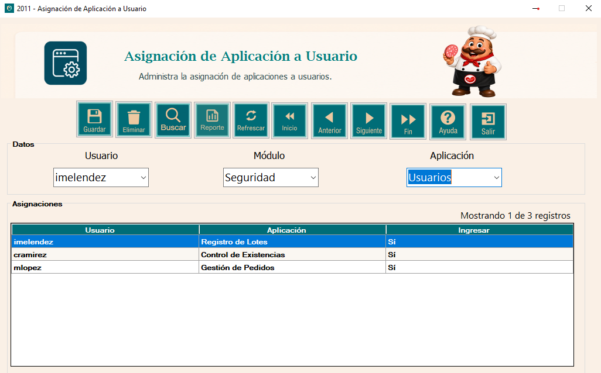
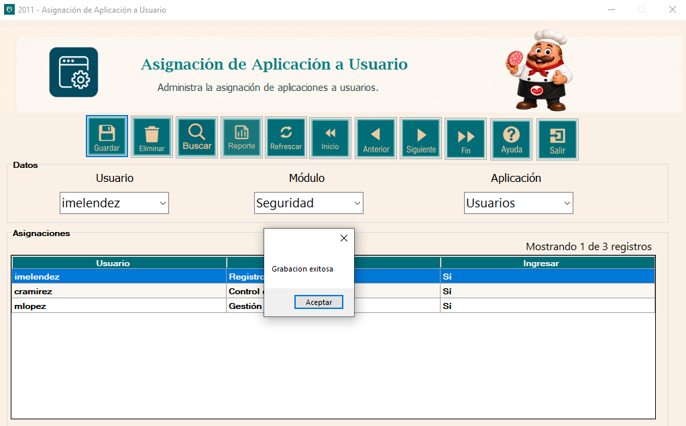
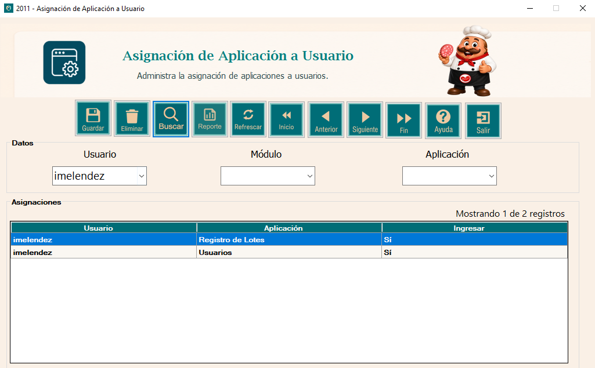
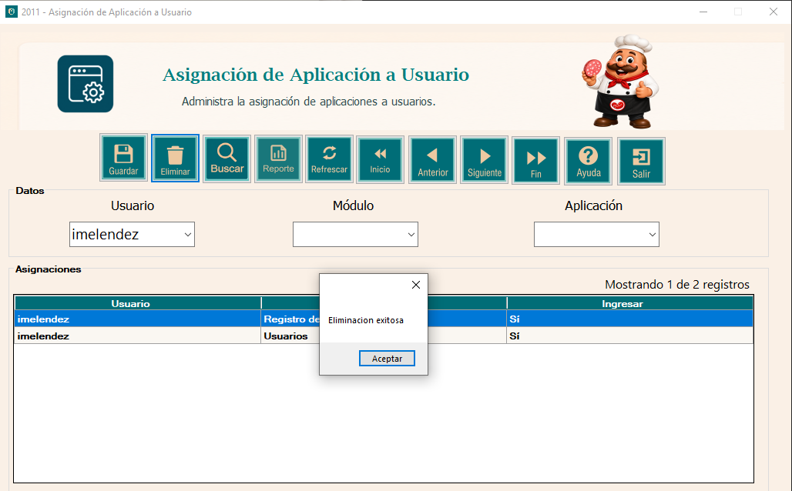
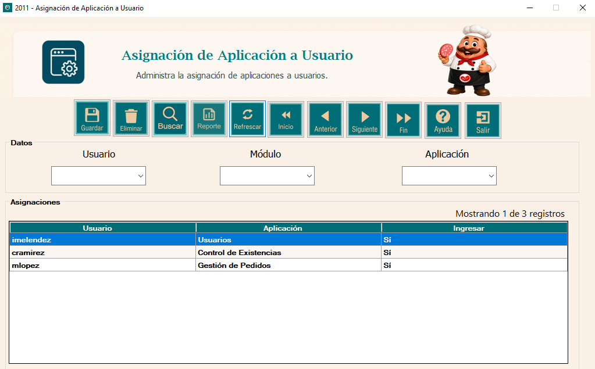
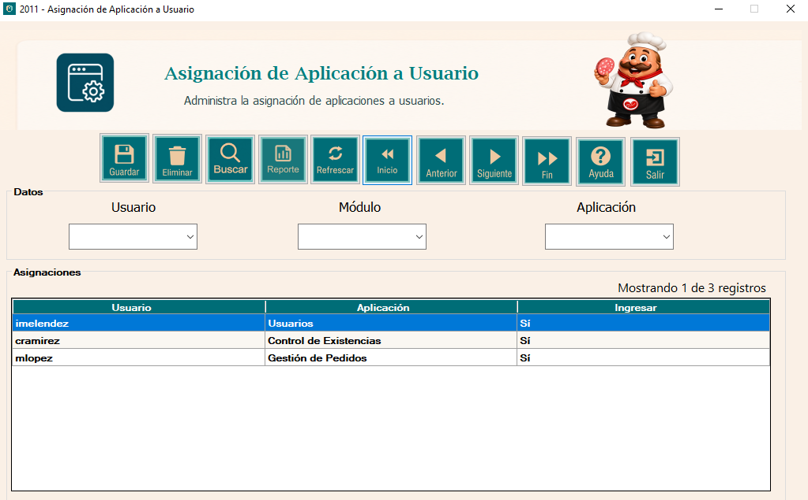
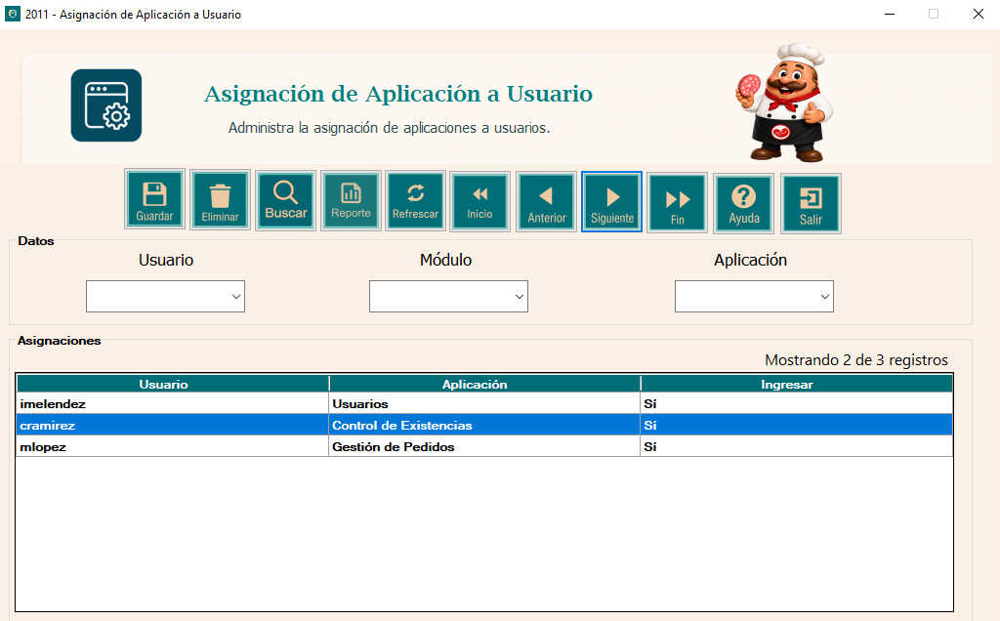
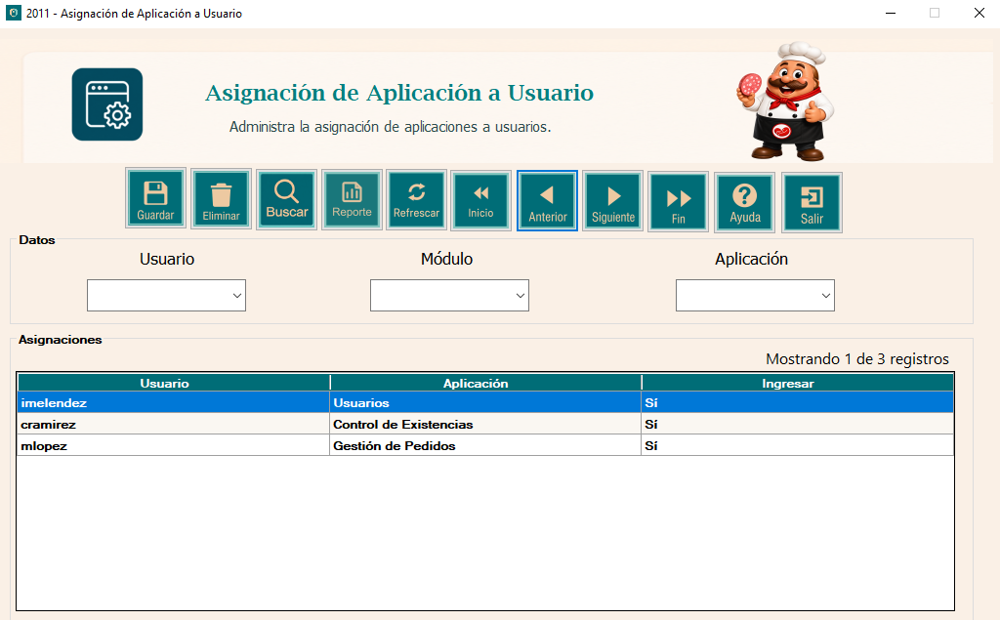
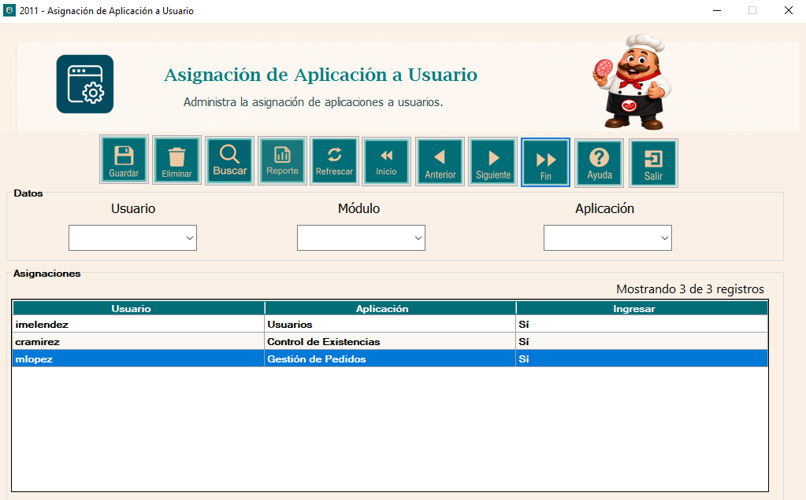

La ventana de Asignación de Aplicación a Usuario pertenece al componente de Seguridad del sistema de Embutidos de Calidad S.A. Su función principal es administrar las aplicaciones que se encuentran asignadas a cada usuario.
Para realizar una asignación se debe seleccionar un usuario, un módulo y una aplicación. La tabla inferior permite visualizar las asignaciones registradas actualmente en el sistema.
Para registrar una nueva asignación siga los siguientes pasos:
1. Seleccione el usuario al que desea asignar una aplicación.
2. Seleccione el módulo correspondiente.
3. Seleccione la aplicación que desea asignar.
4. Presione el botón Guardar.
5. El sistema mostrará un mensaje indicando que la grabación fue exitosa.


Para consultar las asignaciones correspondientes a un usuario:
1. Seleccione el usuario en el campo Usuario.
2. Presione el botón Buscar.
3. La tabla mostrará únicamente las aplicaciones asignadas al usuario seleccionado.

Para eliminar una asignación existente, seleccione el registro correspondiente dentro de la tabla y presione el botón Eliminar. Al finalizar correctamente, el sistema mostrará el mensaje "Eliminación exitosa".

El botón Refrescar permite volver a cargar todas las asignaciones almacenadas en la base de datos. Además, limpia los campos de selección para permitir una nueva operación.

Los botones de navegación permiten desplazarse entre los registros mostrados en la tabla.
Inicio: selecciona el primer registro disponible.
Anterior: retrocede al registro anterior.
Siguiente: avanza al siguiente registro.
Fin: selecciona el último registro disponible.




El botón Reporte permite visualizar el reporte correspondiente a las asignaciones de aplicaciones a usuarios registradas en el sistema.
El botón Ayuda proporciona una indicación rápida sobre los datos necesarios para realizar una nueva asignación de aplicación a usuario.
Para cerrar la ventana de Asignación de Aplicación a Usuario, presione el botón Salir o utilice la X ubicada en la parte superior derecha de la ventana.